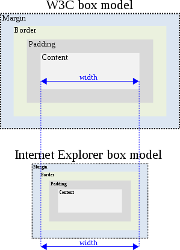

Open Web Technologies:
A History & Introduction
Presented By:
Benjamin Sternthal @bensternthal - Past (10 Minutes)
Craig Cook @craigcook - Present (30 minutes)
{10 Minute Break}
Bill Walker @wfwalker - Future (30 Minutes)
What is A "Web" Standard?
- A Mix Of Standards (JS) & Recommendations (HTML/CSS)
- Not All Standards Are Equal
-
- Standard Bodies
- W3C, IETF, ISO, ECMA, Unicode Consortium, IANA
- Tries To Get Vendors To Agree
- Standards Making Is Slow Process...
Let's Start At The Beginning
comp.sys.next.announce: 8/19/91
This project is experimental and of course comes without any warranty whatsoever. However, it could start a revolution in information access. We are currently using WWW for user support at CERN. We would be very interested in comments from anyone trying WWW, and especially those making other data available, as part of a truly world-wide web.After That Things Moved Quickly
- 1993
- CERN agrees to allow anyone to use Web protocol and code royalty-free.
- NCSA release first alpha version of Marc Andreessen's "Mosaic for X"
- WWW (Port 80 HTTP) traffic measures 0.1% of NSF backbone traffic.
- 1994
- Marc Andreessen and colleagues leave NCSA to form "Mosaic Communications Corp" (later Netscape).
- World Wide Web Consortium founded.
- 1997
- W3C publishes Recommendation for HTML — HTML 3.2.
- IE 4 Released (Bundled With Windows)
- Browser Wars
- 1998
- Web Standards Project - Established to push agenda of standards...
How Do Things Become Standards?
- For W3C Generally
- Working Draft
- Candidate Recommendation
- Proposed Recommendation
- W3C Recommendation
- But They Work - XMLHttpRequest & WebRTC
- Slow! HTML5 'Started' in 2008, Stable Recommendation Expected 2014!!!
The Web Is A Public Resource:
Built On Open Standards... WHY?
- Interoperability
- Decentralized Participation
- Non-proprietarty. No one owns it (although there are bullies)
- Higher Chance Of Future Support
- And my two cents...
- Cost of Participation Low
- Fragmentation is not an issue
- Write once run (mostly anywhere)
- No Gatekeepers
Let's Talk About Microsoft In The Late 90's and Early 2000's
IE: Didn't Like To Follow Standards

Creates A Nightmare For Developers
"Microsoft is committed to implementing the Internet standards that make sense to allow our customers to build great solutions. As standards emerge, we evaluate them to see which standards might best serve our customers' needs."
To Be Fair... Microsoft Were Not Total Jerks
- W3C slow... lumbering
- IE pushed forward Technologies (CSS) and more...
- XMLHttpRequest was Proprietary but Became an Open Standards
- ^ responsible for Ajax, Web 2.0 .. why we have nice things...
.... Back To Standards
- 2000s IE Stagnates - Fragmentation Drives Standards Adoption
- Safari, Chrome and WebKit Appear
- Writing specific code for 4 browsers sucks
- Standards Complient Browsers Winning (yay firefox)
- the late 2000's Wide Adoption of Standards Across All Browsers
- IE introduces standards Mode in IE8 2009...
Life Is Good On The Dekstop
- Developers happy
- Competition & Innovation
- HTML5 Booyah!
- and then this happens....
Can I Install Firefox On This Thing?
Why U Hate Freedom?
iOS & Android Changed Everything
- Mobile Usage Skyrocketed
- You Interact Through Apps Not A Browser
- OH SHIT... remember the manifesto?
- Interoperability - Nope.
- Decentralized Participation - Nope.
- Cost of Participation low - Nope.
- Fragmentation Not an Issue - Nope.
- Write Once Run Anywhere - Nope.
- No Gatekeepers - Hells Nope.
- Runs on Non Proprietary Standards! - Nope.
Firefox OS!
- Applying the Lessons Learned On Desktop To Mobile
- Making sure mobile is interoperable and remains a public resource.
- Remember the manifesto
- Open Web Standards are critical to success.